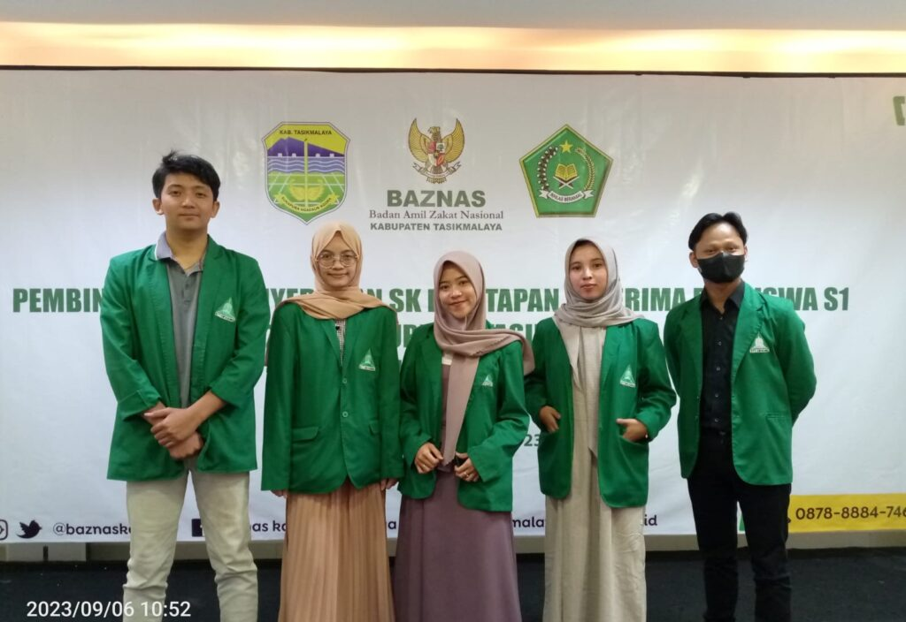
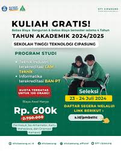
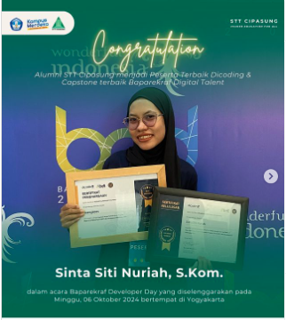
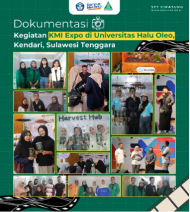

Rilis Berita

WARTA STT CIPASUNG penandatanganan MOU beasiswa BAZNAS
Pada hari Selasa, 9 Juli 2024, STT Cipasung melakukan penandatanganan Memorandum of Understanding (MoU) beasiswa dengan BAZNAS. Kerja sama ini bertujuan untuk memberikan kesempatan pendidikan yang lebih baik bagi para mahasiswa yang membutuhkan. #sttcipasung.
Baca selengkapnya

📣KULIAH GRATIS !!📣 Tersedia kuota KULIAH GRATIS untuk 100 orang di Sekolah Tinggi Teknologi Cipasung (STT Cipasung)
Baca selengkapnya

Selamat kepada Sinta Siti Nuriah, S.Kom, @sinta.nuriah_ Alumni STT Cipasung yang telah mendapat penghargaan
Baca selengkapnya
